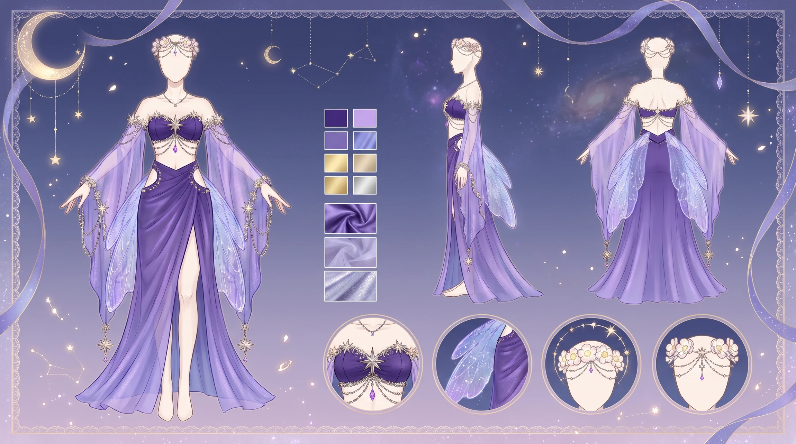
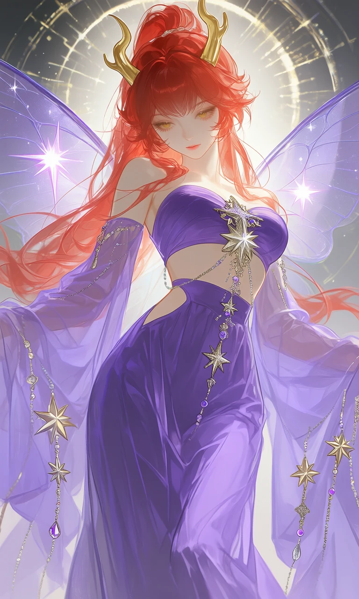
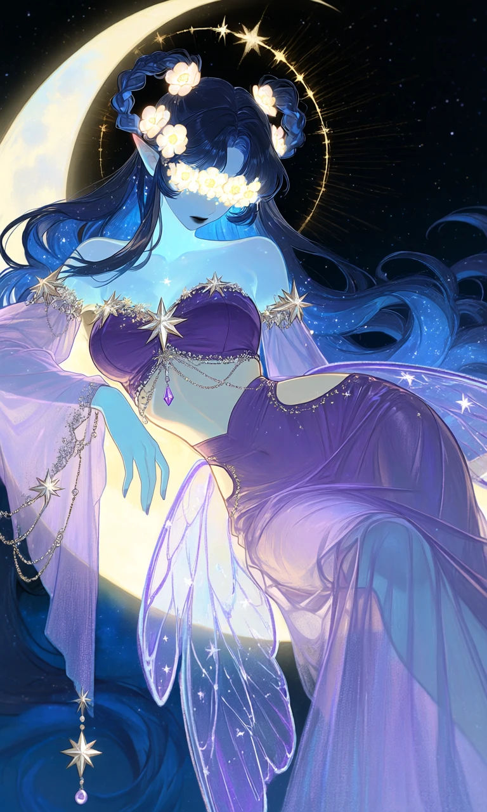

Starfall Fae

Outfit Prompt
She has a transparent purple fabric that has a fairy wing pattern with white sparkles are folded around her skirt creating a transparent glowing star sparkle. Behind her is a large glowing halo that looks like a star map.
She is wearing a strapless bandeau-style purple crop top dress that sits just below the bust, leaving the midriff and upper abdomen exposed. A decorative gold and silver glitter stars appliqué cascades down the center front, adorned with dangling jewelry chains featuring small purple beads, crystals, and metallic accents.
A high-waisted, flowing purple skirt that reaches the ankles or floor, giving it a long, elegant line. The skirt is made of lightweight, semi-sheer fabric that drapes beautifully and moves with the body.
It includes a side cutout on the left hip area, adding a seductive yet artistic element while maintaining coverage, the skirt slightly attaches to the crop top giving the slight illusion of a dress.
The sleeves are detached a dramatic, extra-long flowing sleeve that flares wider towards the end made of sheer purple fabric. The edge of the sleeves are decorated with hanging gold and silver star elements and beaded chains that catch the light as they move.
Outfit Examples



